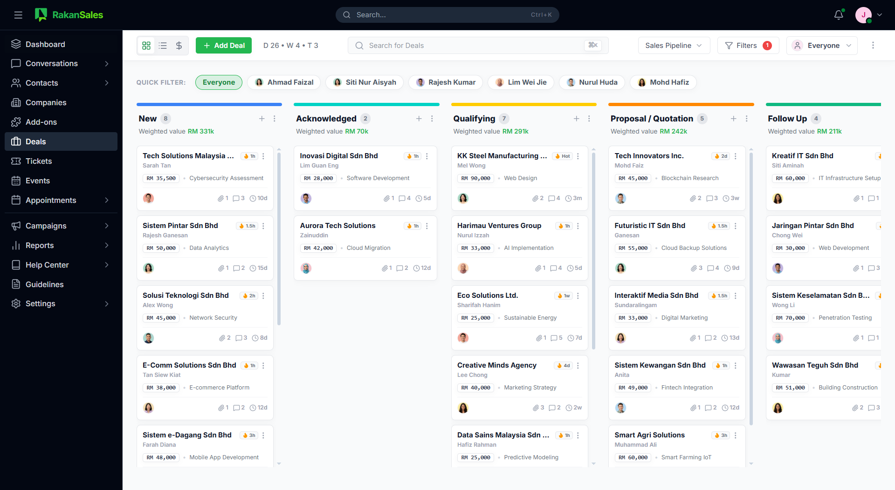
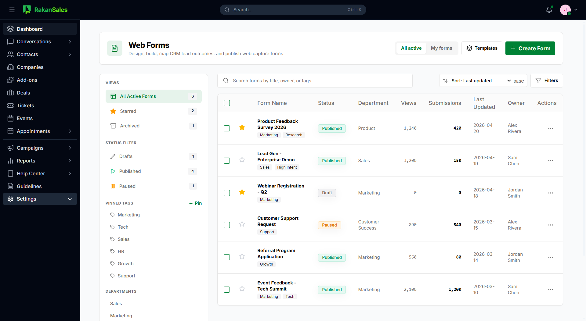

Discover new opportunities.
Find and capture prospects through Lead Finder, web forms, name-card scanning, imports, and connected lead sources.
- Lead Finder
- Web Forms
- Name-card Scanner
- Lead Capture
Find leads, manage every conversation, automate follow-ups, move deals forward, and understand what drives revenue with one AI-powered sales operating system.
Review focus: positioning, section order, content, and conversion hierarchy.

Leads arrive from ads, WhatsApp, social media, email, forms, referrals, and events. Teams then copy information between inboxes, spreadsheets, calendars, and CRMs. Ownership becomes unclear, follow-ups slow down, and management cannot see what is converting.
RakanSales connects the complete journey, from finding a prospect to understanding why the deal closed.
Six connected layers give growing teams one place to discover, engage, sell, automate, understand, and extend.
Find and capture prospects through Lead Finder, web forms, name-card scanning, imports, and connected lead sources.
Bring WhatsApp, Facebook, Instagram, email, forms, and customer context into one team inbox.
Assign owners, organise pipelines, schedule activity, and maintain a clear next action for every deal.
Use AI and configurable workflows to qualify leads, answer approved questions, trigger follow-ups, and route work.
Use AI Charts, attribution, forecasting, response tracking, and team insights to decide where to focus.
Connect customer channels and let the main system administrator add optional capabilities through Marketplace.
This connected workflow is the homepage's main product demonstration.
RakanSales uses approved business knowledge and connected sales context to support conversations, qualification, prioritisation, follow-up, analysis, and decision-making.
The final website should use real product screens and clearly labelled concepts for interfaces still being completed.


Outcome language stays qualitative until approved performance evidence is available.
Bring customer conversations into RakanSales, then let the main system administrator activate advanced capabilities through Marketplace.
Website Live Chat, Facebook Messenger, WhatsApp, SMS, email, Telegram, LINE, Instagram, TikTok, LinkedIn, and custom channels through the API.
RakanSales is developed by the team behind VeecoTech, combining local product support with the technical foundations and security practices required by growing organisations.
Bring your lead sources, conversations, pipeline, automation, and reporting into one connected RakanSales workspace.
Pricing: retained in the sitemap, inner-page content deferred.
Resources: blog, guides, customer stories, FAQ, and help content retained in the sitemap.